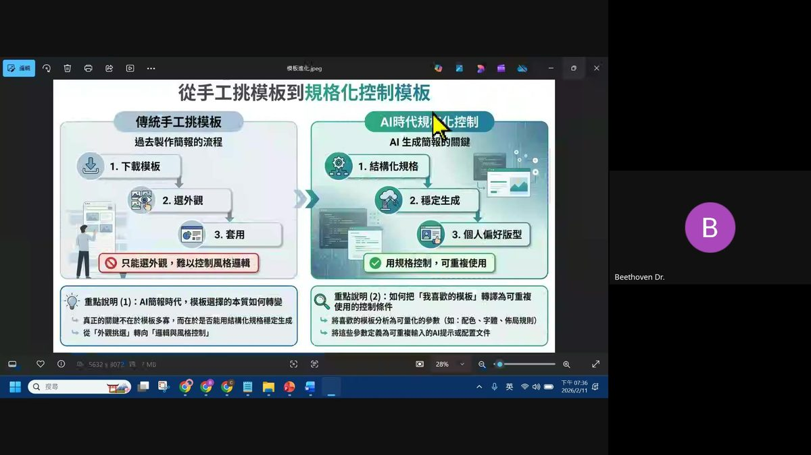
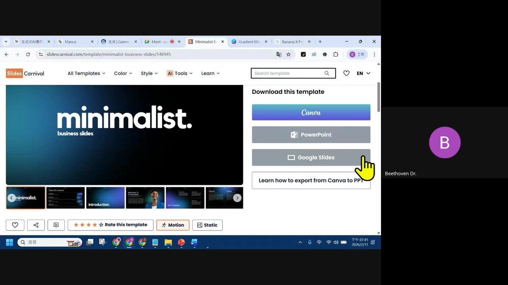
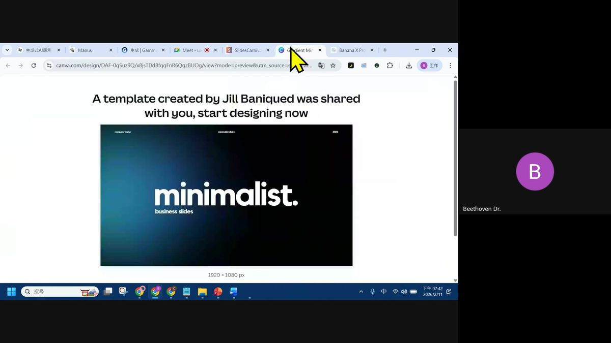
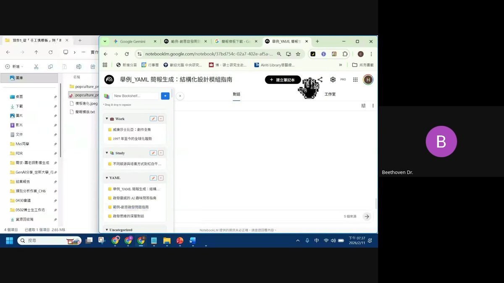
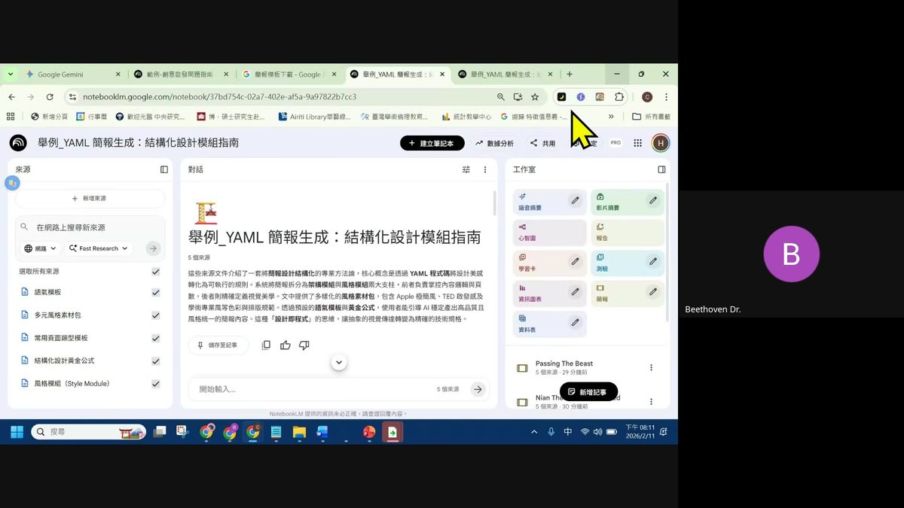
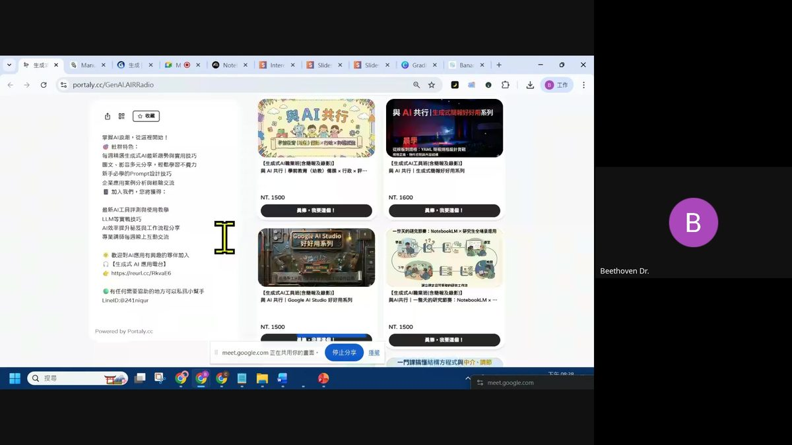

0. 課程資訊與教材
| 課程名稱 | EP25「用 YAML 讓簡報乖乖聽話：從規格到產出一次搞定」 |
|---|---|
| 頻道 | 生成式AI應用電台・晨學講堂 |
| 直播日期 | 2026/02/11 直播 |
| 教材 | 僅有錄影（無獨立課堂筆記或簡報檔），本頁內容全部整理自錄影逐字稿與畫面截圖 |
| 一句話先懂 | 把簡報設計拆成架構模組（內容邏輯／頁數／受眾）與風格模組（視覺美學），用 YAML 寫成規格，AI 依規格穩定產出，抓到方法後大約能做到六到八成的格式穩定度。 |
1. 開場：這堂課要練什麼
延續前幾次直播的格式，目標是建立一套「比較聽話」的簡報規格。
- 目的是讓大家建立一套自己習慣的簡報規格／模式，不論用哪一種生成式 AI 工具做簡報，輸出結果都能比較聽話。
- 老師誠實地說：沒辦法做到百分之百完全照格式跑，但抓到方法後大概可以做到六到八成的穩定度，已經算相當堪用。
- 建議大家準備一個自己想做的題目或主題，邊聽邊實際跟著操作測試。
2. 從「手工挑模板」到「規格化控制模板」
先理解傳統做法的侷限，再看 AI 時代如何反過來用。

傳統流程的侷限
- 上網找喜歡的模板。
- 下載後挑外觀（簡約風、工業風等）。
- 把文字內容一個個手動塞進模板裡。
這個過程要花很多時間手動套內容，而且只能選外觀，難以控制風格邏輯。
反過來用：把模板變成 AI 的參考依據
有了 NotebookLM、Gamma、Canva、Beautiful AI 等生成式簡報工具之後，其實可以反過來操作：把你以前喜歡的模板截圖直接給 AI，請它「根據這個模板的外觀，把我的簡報內容放上去」。
老師的心得：當你對簡報格式沒有明確想法時，直接去看別人的模板長怎樣，通常會比憑空亂想更快找到方向。
傳統模板瀏覽的實例


3. 核心方法：黃金公式——架構模組與風格模組
這是本集最核心的方法論。
老師的作法是先給 AI 一個「黃金公式」，非常詳細地告訴它：請把一份簡報拆成兩個模組來處理——
| 模組 | 負責什麼 |
|---|---|
| 架構模組 | 整體的內容邏輯、格式、頁數、以及「我的受眾是誰」。 |
| 風格模組 | 整體呈現的視覺風格（這個階段完全不涉及內容本身，內容之後才會額外餵給它）。 |
AI 只需要先把「格式跟風格」兩件事處理好，這是這個方法最主要的訴求。
最偷懶（也最建議新手）的做法
- 直接打開 ChatGPT 或 Gemini，把黃金公式的內容貼給它。
- 下指令：「幫我把以上的這些內容轉成 YAML 格式，要如何思考請呈現」。
- AI 就會依序把你的簡報邏輯轉成 YAML 格式。
YAML 格式本身不難，主要是把上面的內容轉換成結構化欄位；大家比較容易卡關的地方通常是「色號／主色配色」和「字體」這類視覺細節該怎麼寫，這部分同樣可以請 AI 協助整理，你只需要事後微調（例如關鍵字要加粗、要強調的地方要標出來）。
4. 打造你自己的 YAML 資料庫（在 NotebookLM 建立筆記本）
老師示範怎麼在 NotebookLM 建立一個「YAML 轉譯」專用筆記本。

- 先給格式，再談內容：筆記本裡第一件事就是要有 YAML 格式規範，此外還要有一份「設定筆記」，明確告訴 AI 兩件事：(a) 它現在是一個「YAML 轉譯大師」；(b) 它不是聊天助手，只是一個編輯器——使用者告訴它需求，它就把需求轉成 YAML 格式。
- 強制它把來源讀完：要在指示中明確要求它「好好地去讀完這些資料」。老師提醒：如果之後上傳了一兩百份、甚至三百多份 YAML 規格文件當作素材，AI 到後面容易偷懶、不會逐份細讀，所以一定要用明確指令強制要求它認真讀完全部來源，才會真正落實。
- 準備你的風格素材包：在黃金公式之外，資料庫裡其餘的內容都是你的「素材包」。例如可以準備多種風格素材：Apple 簡約風、工業風、Prezi 動態風、Icon／火柴人風等等，每一種風格底下都會有各自的字體組成、圖像組成、相關色號組成。
- 由大而小、宏觀到微觀的思考邏輯：想 YAML 規格時，要先從「一個整體風格成立的架構」出發，再往下想這個風格裡會有哪些文字、圖像、圖形，最後才是這些元素各自的顏色、字體、字型、排列方式。老師強調這是準備素材包、做轉譯時「非常非常重要的核心邏輯」——一定要由大而小做完整思考，做法就是逐步和 AI 對話、請它上網協助找相關素材，一步步把資料庫建立完整。
- 成果示範：設定好之後，只要跟 NotebookLM 說「請給我的公版」，它就能直接把黃金公式格式的 YAML 公版格式吐出來、附上可回溯的來源引用。老師也現場示範「換個風格」：只要說「我要用～風格」（例如示範了一個以人物介紹口吻、正式演講風格、要介紹「台北 第一 機場」之類主題的版本），NotebookLM 就會依照設定好的人設與資料包，自動生成對應風格的 YAML 格式演講簡報內容——這個過程完全沒有額外餵給它內容資料，只餵了格式資料，示範的是格式本身可以直接支撐簡報產出。
- 轉譯要有始有終：老師特別強調一個觀念——「請 NotebookLM 用 YAML 轉，出來的內容也要是 YAML」，這樣後續才能真正拿去做進一步的輸出（output）；如果轉譯完卻吐出一般格式文字，那就失去了轉譯 YAML 的意義，仍然沒辦法拿去穩定套用。

5. 把 YAML 規格拿到不同工具做測試比較
建立好公版之後，老師示範把同一份 YAML 規格拿去不同工具實測、互相比較。
- 可以先從做一頁「資訊圖表式的簡報頁」開始練習，而不是一次做整份詳細資訊圖表。
- 如果還沒想法要用什麼風格，可以直接請 AI 依題目「推薦一個好的風格」，它就會自動去你準備好的風格素材包裡挑選對應風格。
- 現場測試：把 NotebookLM 產出的公版 YAML 格式貼給其他工具（如 Gemini／Nano Banana Pro）畫成簡報頁面。
今天練習的兩層次
套用公版
直接使用老師提供的公版 YAML 規格，快速上手體驗。
打造自己的規格資料庫
照著同樣的方法論，自己收集素材、建立屬於自己的一套 YAML 規格系統。
兩種都可以拿來練習。
6. 素材蒐集小撇步＆整體邏輯總複習
- 建立資料庫時不需要收集很多素材，重點是把在網路上找到、覺得不錯的內容整理起來即可。
- 做法可以是先用 ChatGPT／Gemini 對話研究、篩選出覺得好的段落，直接複製貼上文字，作為 NotebookLM 筆記本的新來源。
- 不需要 NotebookLM Pro 版，一般版本就能使用。
資料庫組成順序（由大而小）
- 公式（黃金公式本身）
- 風格模組／相關規格（你有哪些風格模組）
- 常用素材包（字型、圖片等元素）
- 語氣模板
照著這個順序去剪輯、收斂你收集到的資料，就能建立起一套完整、可重複使用的 YAML 簡報規格系統。
7. 結語與社群資訊
最後老師簡短收尾，提醒大家回去可以自己動手試試看規格化的方法；如果簡報生成速度太慢，也可以先從做一個資訊圖表練習開始，這樣之後在找／套用自己的簡報規格時會更順手。

老師最後表示要去準備週末的課程，向大家道謝道別，直播結束。
8. 重點整理：快速回顧 EP25
- 目標是建立自己習慣的簡報規格，讓 AI 輸出「比較聽話」，可達六到八成穩定度。
- 把簡報拆成架構模組（內容邏輯／頁數／受眾）與風格模組（視覺美學），這是黃金公式的核心。
- 用 ChatGPT／Gemini 把黃金公式轉成 YAML 格式，是最偷懶也最建議新手的做法。
- 在 NotebookLM 建立「YAML 轉譯」專用筆記本：先給格式、強制讀完來源、準備風格素材包、由大而小思考、轉譯要有始有終。
- 把同一份 YAML 規格拿到不同工具（Gemini／Nano Banana Pro／Gamma／Canva）實測比較，版面文字通常「壓得比較準」。
- 資料庫組成順序：公式 → 風格模組 → 常用素材包 → 語氣模板。
9. 資料來源與製作說明
- 原始教材：EP25「用 YAML 讓簡報乖乖聽話：從規格到產出一次搞定」——本集 Google Drive 資料夾只有一支直播錄影（約 75 分鐘，Google Meet 螢幕分享），沒有另外附上課堂筆記文件或簡報檔。
- 製作方式：依本站資料來源處理原則，不可跳過或降級使用者指定的資料來源。因此完整下載了這支真實錄影，用 Whisper（small 模型）對音訊做端到端逐字轉寫，並對錄影中的螢幕分享畫面抽格、逐張親眼檢視，挑出六張具代表性的真實截圖收錄於本頁。本頁所有內容整理自這份真實逐字稿與畫面截圖，並非憑空重構或推測。
- 逐字稿修正說明：中文語音辨識在專有名詞上偶有誤判，例如逐字稿把「YAML」聽寫成類似「亞莫／壓模」的音、把「NotebookLM」聽寫成「no不可欠」等，本頁已依上下文將這類明顯的語音辨識誤植修正為正確術語（YAML、NotebookLM、Gamma、ChatGPT、Gemini、Nano Banana Pro 等），內容本身仍完全忠於老師實際講述的內容。
- 誠實聲明：本集沒有官方簡報檔可供逐頁核對，所有畫面截圖皆取自錄影中老師實際操作／展示的螢幕畫面；示範過程中的工具介面（NotebookLM、Gemini、SlidesCarnival、Canva 等）會隨時間更新，實作請以你當下看到的畫面為準。
- 介面參考：互動技能地圖頁沿用本站近期集數的卡片式多層導覽與遊戲化進度設計。